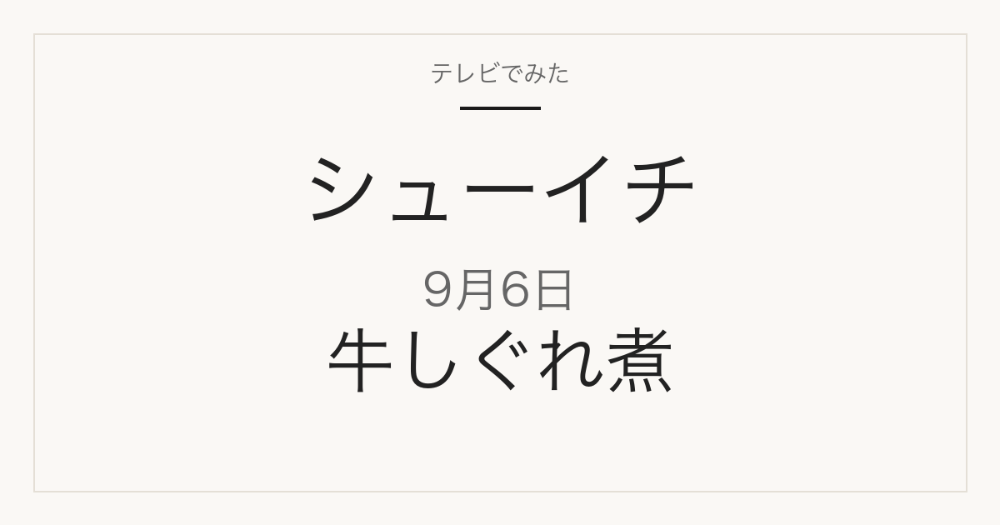

日本テレビ系
シューイチ 究極の牛しぐれ煮／体格ブラザーズ新曲
まじっすか「ご飯のお供」第3弾／体格ブラザーズ新テーマ曲
9月6日の放送は終了しました。番組公式の情報で確認できた内容を企画別にまとめています。

まじっすか
ウルフアロンの「究極のご飯のお供」第3弾
この日のまじっすかは第767回。ウルフアロンが牛肉を使った「究極のご飯のお供」作りに挑む企画の3回目です。目指しているのは、10月に新宿の京王百貨店で開催される「シューイチ全国うまいもの博」での販売です。
- 前回開発したのは、オリーブ牛の希少部位「肩ロースの芯」を使ったしぐれ煮に、チーズと塩昆布を組み合わせた一品
- 今回は商品化に向けて、味だけでなく食感とコストも考えた「究極の牛しぐれ煮」を目指す内容
- うまいもの博で調理・販売を担当する肉のプロ、澤田さんが協力。さまざまな部位や「ちょい足し食材」を検証
9月6日の放送時点では商品化に向けた開発段階で、完成品の商品名・価格・販売開始日は発表されていません。
体格ブラザーズ
新テーマ曲「OILY YOU 〜ラペストメイヤン？〜」が配信開始
番組発の企画「体格ブラザーズ」のテーマソングが完成し、9月6日に配信が始まりました。
- 曲名は「OILY YOU 〜ラペストメイヤン？〜」
- 作詞・作曲はMONGOL800のキヨサク、編曲は同じくMONGOL800のKuboty
- 歌うのは体格ブラザーズのリュウ（ロバート秋山竜次）とユウ（アルコ＆ピース平子祐希）
そのほかの企画
この日に扱われたもの
- 中山秀征による是枝裕和監督への取材
- 松村北斗、今田美桜、柄本佑が出演したクイズ企画
- 北海道のグルメイベントなど、屋内で楽しめるスポットの紹介
公式情報
体格ブラザーズのテーマ曲は、日本テレビおよび音楽メディアの発表で確認しました。そのほかの企画は番組表の公式情報によります。
当サイトは番組公式サイトではありません。未確認情報は掲載しません。